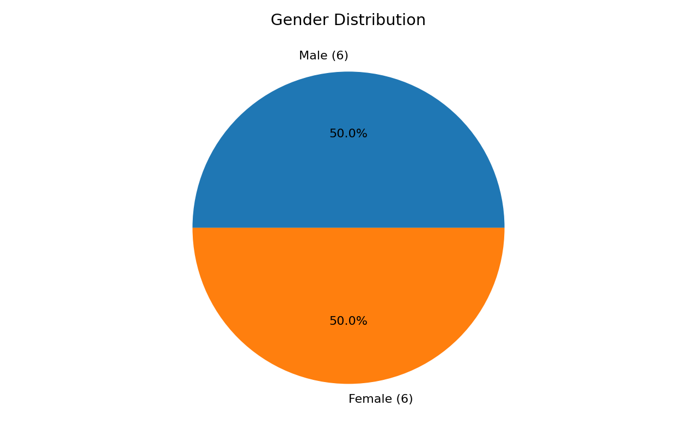
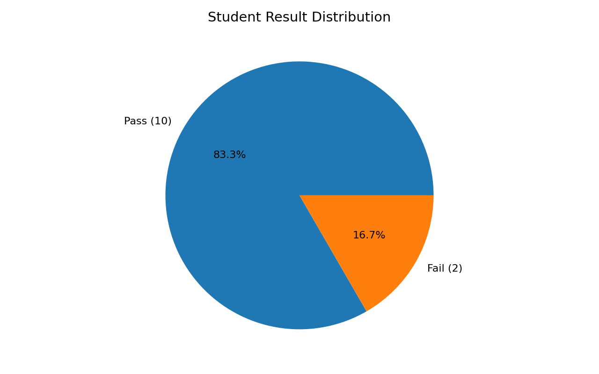
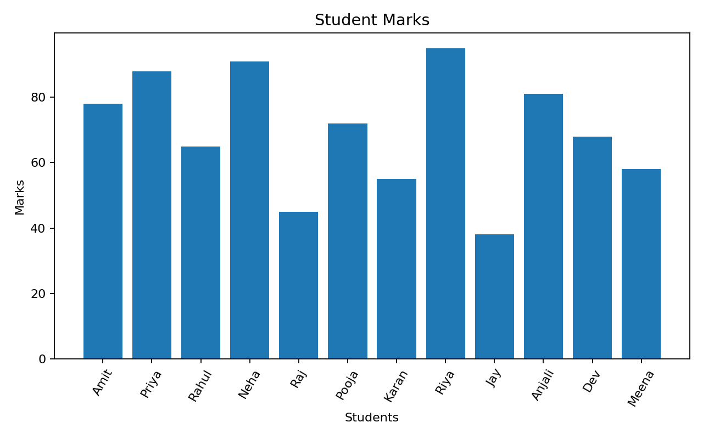
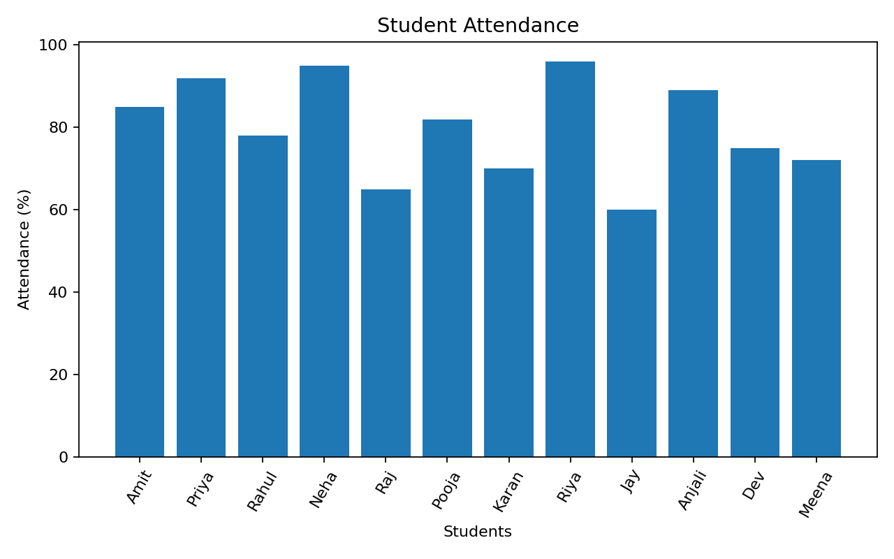
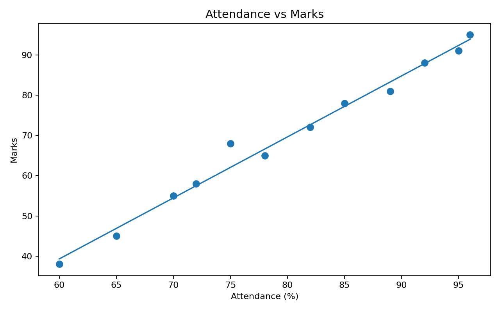

Name:Tanay Mhatre
Div:C
enrollment no.:2505101270083
R Markdown Data Analysis Project
This project analyses student academic data containing student ID, name, gender, age, marks, attendance and result. It covers importing, preprocessing, statistical exploration, visualisation, interpretation and conclusion.
The dataset contains 12 records and 7 variables.
| Student_ID | Name | Gender | Age | Marks | Attendance | Result |
|---|---|---|---|---|---|---|
| 101 | Amit | Male | 20 | 78 | 85 | Pass |
| 102 | Priya | Female | 21 | 88 | 92 | Pass |
| 103 | Rahul | Male | 20 | 65 | 78 | Pass |
| 104 | Neha | Female | 22 | 91 | 95 | Pass |
| 105 | Raj | Male | 21 | 45 | 65 | Fail |
| 106 | Pooja | Female | 20 | 72 | 82 | Pass |
| 107 | Karan | Male | 22 | 55 | 70 | Pass |
| 108 | Riya | Female | 21 | 95 | 96 | Pass |
| 109 | Jay | Male | 20 | 38 | 60 | Fail |
| 110 | Anjali | Female | 22 | 81 | 89 | Pass |
| 111 | Dev | Male | 21 | 68 | 75 | Pass |
| 112 | Meena | Female | 20 | 58 | 72 | Pass |
Missing values checked: 0.
Duplicate rows checked: 0.

There are 6 male and 6 female students, giving an equal gender split in this sample.

Ten students passed and two failed, giving a sample pass rate of 83.3%.

Marks range from 38 to 95, showing substantial variation between students.

Attendance ranges from 60% to 96%.

The Pearson correlation is 0.992637. This is a very strong positive association in this small sample.
The project demonstrates a complete beginner-level data-analysis workflow in R Markdown. The sample suggests that higher attendance is strongly associated with higher marks. However, the dataset is too small to support broad or causal conclusions.
Open student_performance_analysis.Rmd in RStudio with student_data.csv in the same folder and click Knit.